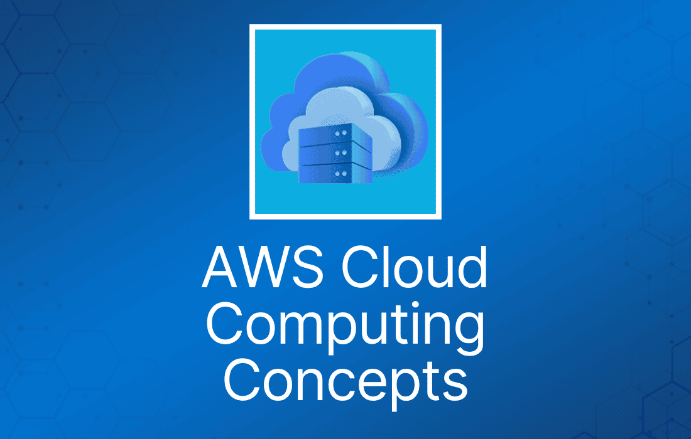

云计算是通过互联网，以按使用量付费的方式，经由云服务平台按需交付计算能力、数据库存储、应用程序和其他 IT 资源。
云计算提供了一种简单的方式，让你通过互联网访问服务器、存储、数据库以及各种应用服务。
下面这篇入门级文章介绍了与云计算相关的一些关键 AWS 概念：
以下文章提供了关于基础计算概念的更多信息：
像 Amazon Web Services 这样的云服务平台，拥有并维护这些应用服务所需的联网硬件，而你只需通过 Web 应用按需预配置并使用所需资源。
云计算的 6 大优势
你必须理解以下云计算的 6 大优势：
- 将资本支出转为可变支出。
- 受益于巨大的规模经济。
- 不再为容量拍脑袋。
- 提升速度与敏捷性。
- 不再花钱运行和维护数据中心。
- 几分钟内走向全球。
将资本支出转为可变支出
你无需在还不清楚如何使用的情况下就重金投入数据中心和服务器，而是只在消耗计算资源时付费，用多少付多少。
受益于巨大的规模经济
使用云计算，你可以获得比自建更低的可变成本。因为云中聚合了数十万客户的用量，AWS 等厂商能够实现更高的规模经济，从而转化为更低的按使用量付费价格。
不再为容量拍脑袋
不再需要猜测基础设施的容量需求。如果在部署应用之前就拍板容量决策，结果往往是资源闲置浪费，或者容量捉襟见肘。
有了云计算，这些问题都不复存在。你可以按需访问任意规模的容量，只需提前几分钟就能完成扩缩容。
提升速度与敏捷性
在云计算环境中，新的 IT 资源只需点击一下就能获得，这意味着把资源交付给开发者的时间从几周缩短到几分钟。
由于实验和开发的成本与时间大幅降低，组织的敏捷性会显著提升。
不再花钱运行和维护数据中心
把精力集中在能体现业务差异化的项目上，而不是基础设施。云计算让你专注于自己的客户，而不是上架、堆叠、供电这些繁重的服务器运维工作。
几分钟内走向全球
只需点击几下，就能轻松将应用部署到全球多个 region。这意味着你可以以极低的成本为客户提供更低的延迟和更好的体验。
云计算模型
考试中常出现 3 种云计算模型：
- 基础设施即服务（IaaS）。
- 平台即服务（PaaS）。
- 软件即服务（SaaS）。
基础设施即服务（IaaS）
基础设施即服务（IaaS）包含云 IT 的基本构建块，通常提供网络功能、计算资源（虚拟机或专用硬件）和数据存储空间的访问。
IaaS 为你提供最高级别的灵活性和对 IT 资源的管理控制能力，与许多 IT 部门和开发者熟悉的现有 IT 资源非常相似。
平台即服务（PaaS）
平台即服务（PaaS）让你的组织无需管理底层基础设施（通常是硬件和操作系统），可以专注于应用的部署和管理。
这让你更高效，因为你无需操心资源采购、容量规划、软件维护、打补丁，以及运行应用过程中其他无差异化的繁重工作。
软件即服务（SaaS）
软件即服务（SaaS）为你提供由服务商运行和管理的成品。大多数情况下，人们提到 SaaS 时指的是最终用户应用。
使用 SaaS 产品时，你不需要关心服务如何维护、底层基础设施如何管理；你只需要考虑如何使用这个软件。
SaaS 应用的常见例子是基于 Web 的电子邮件——你可以直接收发邮件，而无需管理邮件产品的功能更新，也无需维护邮件程序运行所需的服务器和操作系统。
SaaS 提供高可用性、容错能力、可扩展性和弹性。
以下文章提供了更多信息：
云部署类型
考试中常出现 3 种云部署类型：
- 公有云——例如 AWS、Microsoft Azure、Google Cloud Platform（GCP）。
- 混合云——公有云和私有云的混合。
- 私有云（本地部署）——在你自己的数据中心中管理的云，例如 Hyper-V、OpenStack、VMware。
公有云
基于云的应用完全部署在云中，应用的所有部分都在云中运行。云中的应用要么一开始就在云中创建，要么从现有基础设施迁移而来，以享受云计算的好处。
基于云的应用可以构建在底层基础设施之上，也可以使用更高级别的服务，这些服务抽象了核心基础设施的管理、架构设计和扩展需求。
混合云
混合部署是将云端资源与不在云中的现有资源之间的基础设施和应用连接起来的一种方式。
最常见的混合部署是在云与现有本地基础设施之间进行，将组织的基础设施扩展到云中，同时把云资源与内部系统连接起来。
本地部署（On-premises）
使用虚拟化和资源管理工具在本地部署资源，有时被称为“私有云”。
本地部署无法提供云计算的许多好处，但有时人们看重它能提供专用资源这一点。
在大多数情况下，这种部署模型与传统 IT 基础设施相同，只是使用应用管理和虚拟化技术来尝试提高资源利用率。
以下文章提供了更多信息：